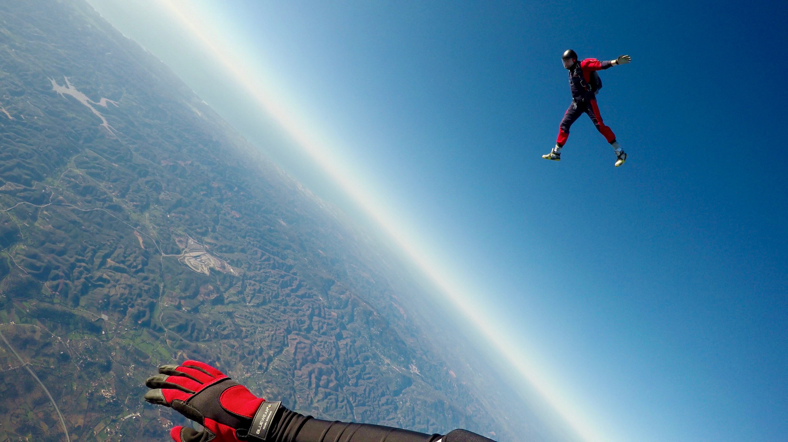

Modern skydiving centers prioritize safety above all else, employing highly trained instructors, regularly inspecting and maintaining equipment, and adhering to strict operational guidelines. Additionally, advancements in technology have significantly improved parachute design and deployment systems. Statistically, skydiving is considered a relatively safe activity when conducted in accordance with established protocols. Emphasize that the thrill of skydiving is coupled with a strong commitment to ensuring the well-being of participants, making it an exhilarating yet secure adventure.
Photo by Kamil Pietrzak on Unsplash
The minimum age for skydiving varies by location but is typically around 18 years old. Some drop zones may allow younger participants with parental consent. There is no maximum age limit, but individuals above a certain age may require a doctor's approval.
Photo by Jongjit Pramchom on Unsplash
No prior experience or special skills are required for tandem skydiving, where you jump with a certified instructor. For solo jumps, you'll need to complete a training program, such as Accelerated Freefall (AFF), which teaches you the necessary skills.
The cost of a skydive varies based on factors like location, jump type, and altitude. On average, tandem jumps can range from $200 to $300, while solo training programs may cost more. Be sure to check with your chosen drop zone for specific pricing.
Freefall typically lasts about 30 to 60 seconds, depending on the altitude of the jump. After deploying the parachute, the canopy flight can last an additional 5 to 7 minutes, providing a total skydiving experience of around 10 minutes.
Photo by Kamil Pietrzak on Unsplash
Wear comfortable clothing, and dress appropriately for the weather conditions. Most drop zones provide jumpsuits to wear over your clothing, and you'll need closed-toe shoes, preferably with laces.
Photo by Kamil Pietrzak on Unsplash
Many drop zones allow you to bring a camera or GoPro on your jump, but there are strict safety guidelines for securing the equipment. It's essential to discuss this with your instructor and follow their instructions to ensure safe use.
The sensation of jumping out of an airplane is a mix of exhilaration, adrenaline, and freedom. As you exit the aircraft, you'll experience a rush of wind and a brief moment of weightlessness during the freefall. It's an indescribable feeling that's both thrilling and awe-inspiring.
Modern parachute systems are equipped with redundancies and automatic activation devices (AADs) that deploy the reserve parachute if the main one fails to open. Fatal parachute failures are extremely rare, thanks to these safety features and proper training.
Photo by Kamil Pietrzak on Unsplash
It's advisable to eat a light, balanced meal a few hours before your jump to maintain energy levels. Avoid heavy or greasy foods, as they may cause discomfort during the jump. Staying hydrated is also essential. However, it's best to follow the specific dietary recommendations provided by your drop zone to ensure a safe and comfortable experience.